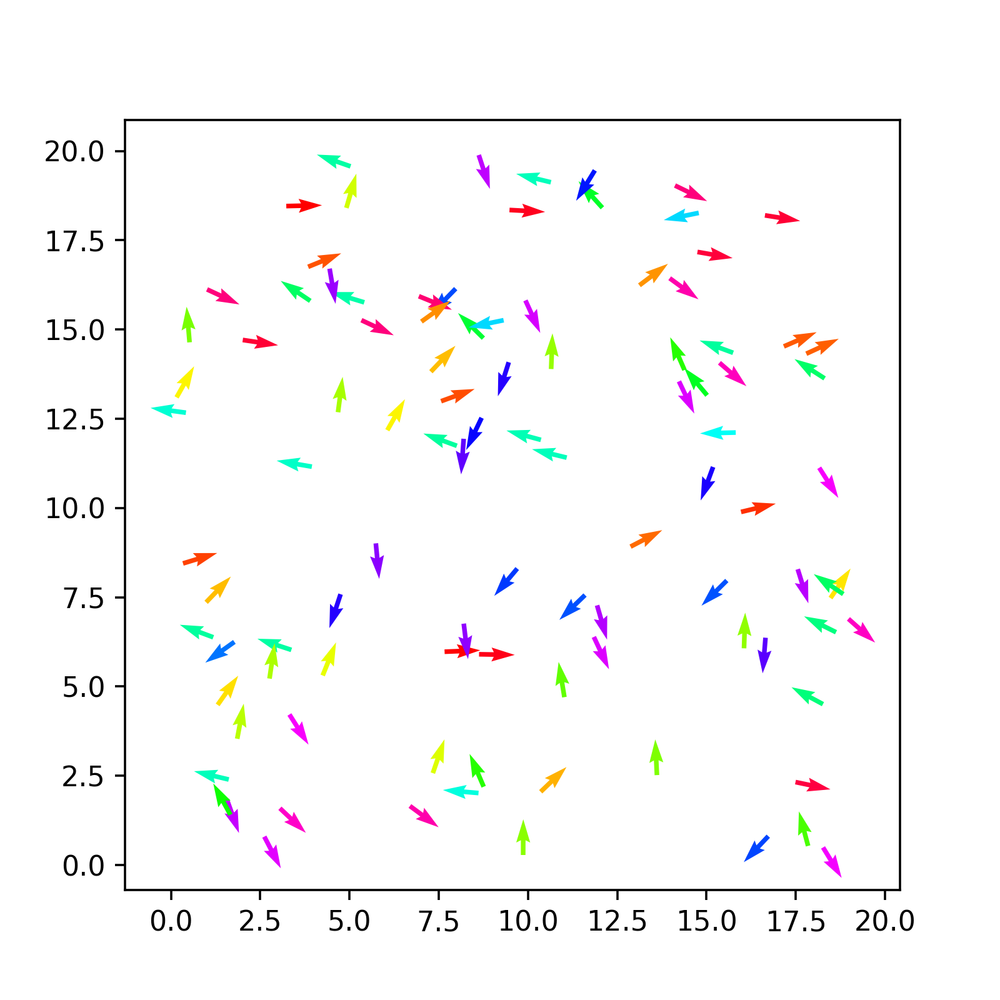

Implementation of Vicsek dynamics
Aims
- Initialise the start configuration with random positions and orientations
- Specify the update rule specific to the Vicsek model
Learning outcomes
- Using C++ random number generators
- Updating objects’ properties
Random initial state
We have constructed all the objects we neeed:
- a box
- a set of particles
- and a
Simulationobject to combined them together
We want now to think of our problem more concretely. First, our simulation needs to start from an initila configuration. This means that the particles composing the model need to be place somewhere in space and oriented in some direction.
Indeed, when we designed our Particle object we equipped it with member variables precisely to determine that:
- the
xandycoordinates - the orientation
theta
The simplest choice we can make is to choose these at random using the uniform distribution. for this purpose, we have also equipped the System class with a member function uniform that precisely samples that distribution.
So, the idea is now to combine these various pieces together into a new member function for the System class to initialise the system.
How do we make the various classes communicate? We are working from the System class, which has instances of both the Box and the Particle class as member variables. You should have
- a
simulationBoxinstance in theSystemdefinition - a vector of
Particleinstance in theSystemdefinition
So, to sample a position within the simulation box we simply pick random numbers between 0 and and the box side. And for this, we can use the features that we have specified for every object.
For example, in C++11 we can loop over a vector in a Pythonesque fashion:
for (Particle &p : this->particles){
...
}where clearly this->particles allows us to point to the correct member variable of the System class.
Then, drawing a random x coordinate leverages the properties of the system (we defined a uniform() member function for the System), the box (we defined a getSidex() member function for it) and the particle (the coordinate x is a public member variable, so we can change it directly).
p.x = this->uniform(0,this->simulationBox.getSidex());Saving a configuration to file
The combination of particle positions and orientations defines a configuration of the system. For the purpose of visualisation, it would be useful to output this data and store it to file.
In this module, we will not focus on the many details of file input output in C++. Suffice to say that C++ works with streams of information. One of the streams you are used to is the standard output, accessed via std::cout in the standard library using the <iostream> library.
When one wants to use file outputs, one needs to use the <fstream> library and construct output streams directly. Here below we provide you with a reverse engineering exercise: given a certain implementation of a function, reconstruct its definition.
Now we only need to actually tell our system to do the initialisation and save the configuration.
To do this, we need to use the instance of System that we have created. This exists only in main.cpp, inside the main() function. There is where we need to call the two new methods we have created.
Sprinkle some python: read the configuration a visualise it
We have finally produced some (non-trivial) output from our code. It is just a random initial configuration, but it is worth having a look and plot it to see if it matches our expectations.
For this, Python is the easiest tool at our hand. So, we are going to use now simple procedural Python to read in the initial configuration and plot it. We will see later how these instructions acan also be made *object-oriented** (within Python).
We organise our python code in a separate file, which we call pyvicsek.py. We will read the configuration trivially using numpy
import numpy as np
def read_config(filename, skip=2):
"""Reading an vicsek configuration from a file handle"""
with open(filename) as file_handle:
# skip the first two lines
for i in range(skip):
next(file_handle)
data = np.loadtxt(file_handle)
conf = {}
conf["id"] = data[:,0]
conf["x"] = data[:,1]
conf["y"] = data[:,2]
conf["theta"] = data[:,3]
conf["vx"] = np.cos(conf["theta"])
conf["vy"] = np.sin(conf["theta"])
return confNotice that we work directly with the file handler. It is a choice that will be useful when operating with trajectories of the system.
We can use matplotlib’s quiver plot to actually plot arrows.
def plot(conf,ax):
ax.figure(figsize=(5,5))
qv = ax.quiver(conf["x"], conf["y"], conf["vx"], conf["vy"], conf["theta"], scale=1, scale_units='xy', cmap='hsv')
plt.axis('equal')
return qvCombining all this together you should obtain something like the following

Actual Vicsek dynamics
Now comes the actual challenge: we want to code the dynamics of te vicsek model so that our updateRule() in System actually updates the positions and angles of the system.
Here was our algorithm after initialisation
Neighbor Identification: For each particle \(i\), identify neighbors within radius \(r\).
Alignment: Compute the average direction of neighbors, including \(i\): \[ \bar{\theta}_i = \text{atan2}\left(\sum_{\rm j \in neighbours} \sin\theta_j, \sum_{\rm j \in neighbours} \cos\theta_j\right) \]
Noise: Add a random perturbation \(u\) to the orientation as a random variable uniformly distributed in the interval \([-\eta/2,\eta/2]\), where \(\eta\) is teh noise strength
\[ \theta_i^{\text{new}} = \bar{\theta}_i + u \]
Update Position: Move each particle with its updated velocity: \[ \mathbf{r}_i^{\text{new}} = \mathbf{r}_i + \mathbf{v}_i \Delta t \]
Repeat: Iterate for the desired number of time steps.
There are a few central points:
- we need to calculate all the updates before we apply them, otherwise the motion will not be synchronous
- the calculation of the average local angle for alignment depends on sines and cosines. Directly averaging would be problematic (e.g. when two angles are close to \(+pi\) and \(-\pi\)).
The algorithm can be translated in pseudo-code.
Click to expand pseudocode
initialize new_theta array with size equal to number of particles
for each particle i:
count = 10
c, s = cos(theta[i]), sin(theta[i])
for each particle j ≠ i:
compute distance with periodic boundaries
if distance within interaction radius:
accumulate cosine and sines of particle j in c, s
increment count
avg_theta = atan2(sin / count, cos / count)
add uniform noise in [-pi, pi] to avg_theta and store in new_theta[i]
for each particle i:
update position:
x += cos(new_theta[i]) * v * dt
y += sin(new_theta[i]) * v * dt
update orientation:
theta = new_theta[i]
apply periodic boundaries to x and yVisualising the trajectory
Simple modifications to your Oython code to include matplotlib’s Funcanimation allow you to visualise the trajectory
Here is a an example
import numpy as np
import matplotlib.pyplot as plt
import glob
import natsort
from matplotlib.animation import FuncAnimation
def read_config(filename, skip=2):
"""Reading an vicsek configuration from a file handle"""
with open(filename, 'r') as file_handle:
for i in range(skip):
next(file_handle)
data = np.loadtxt(file_handle)
conf = {}
conf["id"] = data[:,0]
conf["x"] = data[:,1]
conf["y"] = data[:,2]
conf["theta"] = data[:,3]
conf["vx"] = np.cos(conf["theta"])
conf["vy"] = np.sin(conf["theta"])
return conf
def plot(conf, ax):
qv = ax.quiver(conf["x"], conf["y"], conf["vx"], conf["vy"], conf["theta"], scale=1, scale_units='xy', cmap='hsv')
return qv
# files are stored in a folder
files = natsort.natsorted(glob.glob("frames/*"))
# first plot
fig, ax= plt.subplots() #
qv = plot(read_config(files[0]),ax)
plt.axis('equal')
plt.axis('off')
# function called to plot all files
def animate(i):
print(i)
conf = read_config(files[i])
pos = np.array(list(zip(conf["x"], conf["y"])))
print(pos)
qv.set_offsets(pos)
qv.set_UVC(conf["vx"], conf["vy"], conf["theta"])
# Create the animation
anim = FuncAnimation(fig,animate, range(len(files)))
# Show the animation
plt.show()